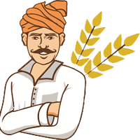

छत्तीसगढ़ समर्थन मूल्य पर धान खरीदी 2026-27
समिति में भीड़ और लंबी कतारों से बचें! अब घर बैठे अपने मोबाइल व कंप्यूटर से धान उपार्जन केंद्र (समिति) हेतु पसंदीदा दिनांक का टोकन बुक करें।

🌦️ धान सुरक्षा व स्थानीय मौसम अलर्ट (Paddy Weather Guard)
समिति जाने से पहले अपने क्षेत्र का मौसम, बारिश की संभावना व मानक धान नमी (FAQ 17%) जांचें
प्रमुख सेवाएं (Key Services)
अपनी सुविधानुसार सेवा का चयन करें
किसान कोड खोजें
28 जिलों के 21.77 लाख किसानों में से अपना नाम, पिता का नाम या कोड खोजें।
कोड खोजेंशपथ पत्र व शिकायत
अधिया, बंटाईदार, नॉमिनी शपथ पत्र व कलेक्टर शिकायत पत्र तैयार करें।
फॉर्म बनाएंसौर सुजला व DBT चेकर
सोलर पंप 95% सब्सिडी गणना व रुका हुआ भुगतान पाने हेतु DBT सहायता।
सब्सिडी देखेंटोकन स्थिति एवं पर्ची
काटे गए टोकन की स्थिति देखें व प्रिंट योग्य पावती पर्ची निकालें।
पर्ची देखेंधान मात्रा कैलकुलेटर
अपने कुल रकबे के अनुसार कुल धान व टोकन की संख्या की गणना करें।
गणना करेंदिशानिर्देश व नियम
समर्थन मूल्य, 17% नमी मानक, टोकन व्यवस्था व हेल्पलाइन नियम देखें।
नियम देखेंकिसान कोड एवं सूची क्रमांक खोजें
छत्तीसगढ़ समर्थन मूल्य धान उपार्जन • जिला एवं उपार्जन केंद्र (समिति) चुनकर किसान कोड देखें
| सूची क्र. | किसान कोड (Farmer Code) | किसान का नाम | पिता / पति का नाम | सोसायटी / उपकेंद्र | कुल धान | कार्यवाही |
|---|---|---|---|---|---|---|
डेटा लोड हो रहा है...कृपया प्रतीक्षा करें |
||||||
किसान कानूनी शपथ पत्र व शिकायत आवेदन निर्माता
समिति, तहसीलदार व कलेक्टर हेतु आवश्यक कानूनी शपथ पत्र व शिकायत आवेदन 1-क्लिक में तैयार व प्रिंट करें
शपथ पत्र का प्रकार व विवरण चुनें
सौर सुजला योजना सब्सिडी चेकर एवं DBT बैंक सहायता
सोलर पंप पर 95% सरकारी सब्सिडी की गणना करें और धान का रुका भुगतान पाने हेतु बैंक आवेदन पत्र बनाएं
सोलर पंप विवरण व कृषक श्रेणी चुनें
₹3,50,000
सोलर पैनल, इन्वर्टर, मोटर व इंस्टॉलेशन सहित₹3,32,000 (95%)
शासन द्वारा वहन₹18,000
किसान को मात्र इतनी राशि का बैंक ड्राफ्ट देना होगाआवश्यक दस्तावेज
- कृषि भूमि का चालू खसरा एवं बी-1 (पटवारी प्रति)
- आधार कार्ड व बैंक पासबुक की छायाप्रति
- सक्षम अधिकारी द्वारा जारी जाति प्रमाण पत्र (ST/SC/OBC)
- सिंचाई स्रोत (बोरवेल / कुआं / नाला) की उपलब्धता प्रमाणीकरण
आवेदन कहां और कैसे करें?
- अपने जिले के क्रेडा (CREDA) कार्यालय में आवेदन फॉर्म जमा करें।
- नजदीकी ग्रामीण कृषि विस्तार अधिकारी (RAEO) से संपर्क कर अग्रिम अनुशंसा कराएं।
- स्वीकृति मिलने पर निर्धारित किसान अंश का ड्राफ्ट जिला क्रेडा कार्यालय के नाम जमा करें।
टोकन स्थिति एवं रसीद पावती (Token Status & Slip)
टोकन नंबर या किसान कोड से अपना टोकन खोजें और पावती पर्ची प्रिंट करें

डिजिटल किसान सेवा - छत्तीसगढ़ धान उपार्जन सहायता
समर्थन मूल्य पर धान उपार्जन - टोकन पावती पर्ची
खरीफ विपणन वर्ष 2026-27 | तुंहर टोकन ऑनलाइन प्रणाली
| किसान कोड (Farmer Code): | TF4400590100836 | किसान का नाम: | रामेश्वर साहू |
| पिता/पति का नाम: | स्व. चैतराम साहू | मोबाइल नंबर: | 98XXXX4321 |
| जिला: | रायपुर (Raipur) | विकासखंड: | आरंग (Arang) |
| उपार्जन केंद्र (समिति): | रसौटा (समिति कोड: 440059) | ||
| धान लाने की नियत तिथि: | 16-11-2026 (सोमवार) | अनुमत धान मात्रा: | 40.00 क्विंटल (100 बोरे) |
| धान का प्रकार: | धान (मोटा/कॉमन) | वाहन का प्रकार: | ट्रैक्टर |
| कुल स्वीकृत रकबा: | 2.5000 हेक्टेयर | बैंक खाता शाखा: | C.G. Rajya Gramin Bank |
धान विक्रय व टोकन कोटा कैलकुलेटर
छत्तीसगढ़ शासन की 21 क्विंटल प्रति एकड़ नीति अनुसार अपने कुल धान व मूल्य की गणना करें
संभावित गणना परिणाम
* गणना 21 क्विंटल प्रति एकड़ की दर से ₹3100 प्रति क्विंटल मानकर की गई है।
टोकन प्रणाली के नियम एवं मार्गदर्शिका
तुंहर टोकन के माध्यम से सुगम धान उपार्जन हेतु आवश्यक दिशा-निर्देश
टोकन जारी करने का समय व दिन
टोकन केवल कार्यदिवसों (सोमवार से शुक्रवार) हेतु जारी किए जाएंगे। शनिवार व रविवार को धान उपार्जन अवकाश रहता है। टोकन बुकिंग प्रतिदिन प्रातः 9:30 बजे से प्रारंभ होती है।
दैनिक उपार्जन सीमा (समिति क्षमता)
प्रत्येक उपार्जन केंद्र की दैनिक भंडारण व परिवहन क्षमता सीमित होती है। यदि किसी दिनांक को कोटा पूर्ण हो चुका है, तो किसान आगामी किसी अन्य उपलब्ध दिनांक का चयन कर सकते हैं।
धान की गुणवत्ता मानक (FAQ Standards)
उपार्जन केंद्र पर लाया जाने वाला धान मानक गुणवत्ता (FAQ) का होना चाहिए, जिसमें नमी अधिकतम 17% से अधिक नहीं होनी चाहिए। बदरंग व कचरा रहित साफ धान ही स्वीकार्य होगा।
बायोमेट्रिक प्रमाणीकरण (आधार/माइक्रोएटीएम)
उपार्जन केंद्र पर धान तौल के समय किसान या उनके द्वारा नामांकित नॉमिनी (वारिस) का बायोमेट्रिक / आधार सत्यापन आवश्यक है।
टोकन निरस्त व दोबारा काटना
यदि किसान निर्धारित दिनांक को धान लाने में असमर्थ हैं, तो वे उस तिथि से कम से कम 24 घंटे पूर्व टोकन निरस्त कर सकते हैं, ताकि समिति का स्लॉट व्यर्थ न जाए।
सहायता एवं शिकायत निवारण
यदि टोकन काटने या किसान कोड खोजने में कोई कठिनाई हो रही है, तो अपने निकटतम समिति प्रबंधक, ग्रामीण कृषि विस्तार अधिकारी (RAEO) अथवा राज्य स्तरीय टोल-फ्री हेल्पलाइन पर संपर्क करें।